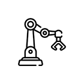
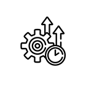

연구소 소개
선박 해양 연구소
선도적 시장창출을 위한 세계 최고 수준의 제품 개발 신기술 개발과 기계/전기분야 기술 융합을 통해 선박/해양플랜트에 탑재 되는 각종 기계/전기 장치의 자동화, 시뮬레이션 및 응용 엔지니어링 기술에 대한 연구를 수행하고 있습니다.

첨단 기술

높은 생산률
쉬운 유지 보수

해양 연구
산업 기술 연구소
생산분야 자동화 연구, 로봇응용 연구, 용접기법/장치/변형제어 등 용접기술연구, 측정기기/기술/계측의 시험측정 연구, 도장기술과 친환경/에너지저감 환경방식연구등 현장의 생산성 향상과 품질혁신을 목표로 연구를 진행하고 있습니다
첨단 기술
높은 생산률
쉬운 유지 보수
해양 연구
특수 성능 연구소
국내 최초의 해양 방위산업 관련 전문 연구소로 설립되어 잠수함 핵심기자재 국산화 연구개발, IT기반 전투체계 연구와 동시에 해양자원 개발을 위한 엔지니어링 등을 수행및 플랜트 설계 연구를 진행하고 있습니다
첨단 기술
높은 생산률
쉬운 유지 보수
해양 연구